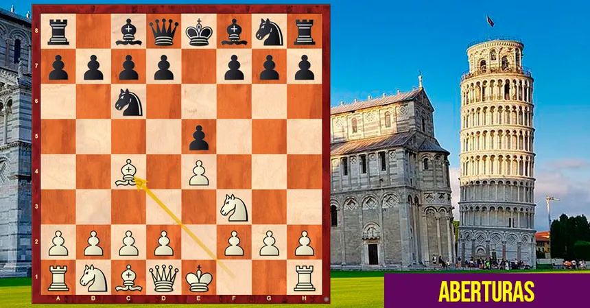

A Abertura Italiana é uma das aberturas mais tradicionais e conhecidas do xadrez. Ela começa com os movimentos 1. e4 e5 2. Cf3 Cc6 3. Bc4, colocando as peças rapidamente em posições ativas e buscando controlar o centro do tabuleiro. Seu nome está relacionado à tradição enxadrística italiana, especialmente aos jogadores e estudiosos que contribuíram para o desenvolvimento do xadrez na Itália durante o século XVI. A ideia principal da Abertura Italiana é desenvolver as peças rapidamente, controlar o centro e preparar o roque para deixar o rei mais seguro. O bispo em c4 exerce pressão sobre a casa f7, que é uma das casas mais vulneráveis das pretas no início da partida. As pretas normalmente respondem desenvolvendo suas próprias peças e buscando equilíbrio no centro. Essa abertura pode levar a partidas bastante estratégicas, mas também permite ataques e combinações táticas. Por ser relativamente fácil de entender e possuir princípios importantes de desenvolvimento, controle do centro e segurança do rei, a Abertura Italiana é muito utilizada por jogadores iniciantes e também por jogadores experientes. Ela continua sendo uma escolha popular tanto em partidas presenciais quanto em competições de alto nível.